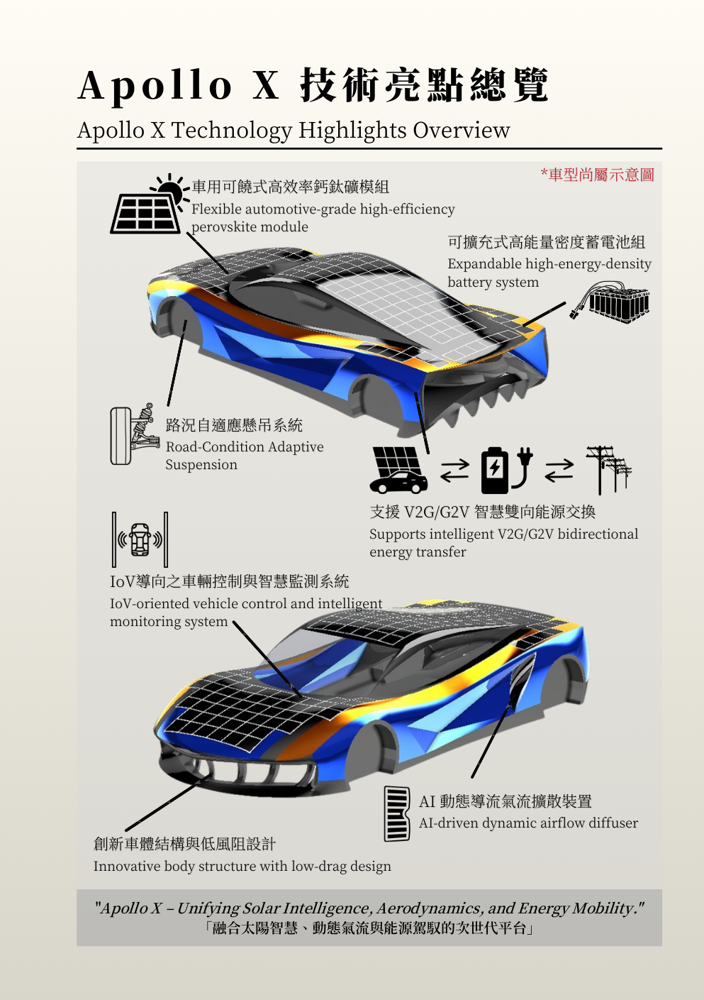

NKUST APOLLO
TECHNOLOGY HIGHLIGHTS OVERVIEW
Apollo X 是我們對未來移動載具的終極想像。透過導入六大核心技術，我們不再只是製造一輛太陽能車， 而是打造一個集潔淨能源、AI 運算與智慧電網於一身的移動平台。
"Apollo X – Unifying Solar Intelligence, Aerodynamics, and Energy Mobility."
導入新一代 Perovskite 太陽能技術，具備可撓曲特性，能完美貼合流線車體，大幅提升光電轉換效率。
Flexible Perovskite Module模組化電池包設計，可依據短程衝刺或長途巡航需求，彈性調整電池數量，達成最佳能重比。
Expandable Battery System電子主動式懸吊，能即時偵測路面狀況並調整阻尼與車高，兼顧賽道貼地性與一般道路舒適性。
Adaptive Suspension不只是消耗能源，更能回饋電網。車輛可作為移動儲能站，支援 Vehicle-to-Grid 雙向供電技術。
Bi-directional Energy全車聯網系統，即時監控全車數據（電壓、溫度、胎壓），並透過雲端 AI 分析最佳行駛策略。
Intelligent IoV System結合 AI 動態導流氣流擴散裝置 (Diffuser)，在極低風阻的基礎上，主動產生下壓力以提升高速穩定性。
AI-driven Aerodynamics| 階段 Phase | 時間 Duration | 關鍵目標 Key Objectives |
|---|---|---|
| 01. 概念設計 | 2026 Q1 | 技術規格定案、鈣鈦礦模組可行性評估。 |
| 02. 模擬分析 | 2026 Q2 | CFD 流體力學模擬、底盤幾何運算。 |
| 03. 原型製作 | 2026 Q3-Q4 | 車體模具開發、關鍵零組件 (BMS, V2G) 測試。 |
| 04. 實車組裝 | 2027 Q1 | 全車系統整合、碳纖維車體成型。 |
| 05. 測試驗證 | 2027 Q2 | ARTC 實車路測、風洞測試、參數調校。 |